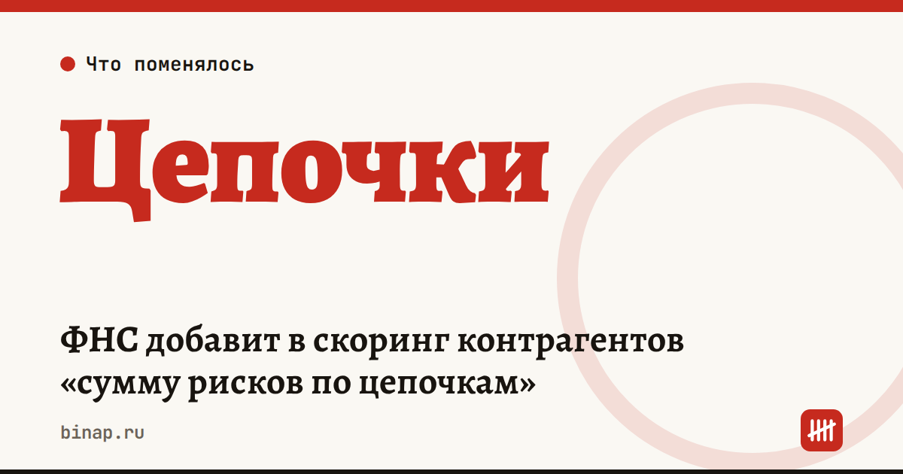

ФНС добавит в скоринг контрагентов «сумму рисков по цепочкам»

ФНС планирует добавить в скоринг контрагентов показатель «сумма рисков по цепочкам». Он справочный, но если налоговая увидит проблемное звено в цепочке ваших поставщиков, вы получите уведомление. Подавать уточнённую декларацию оно не заставляет, однако реагировать на него нужно.
Коротко
- О планах рассказали на Налоговом форуме ТПП в Москве 20–21 октября 2026 года.
- Показатель будет справочным, а не решающим — так сказала Ирина Александрова из ИФНС по крупнейшим налогоплательщикам № 4.
- Уведомление не обязывает подавать уточнённую декларацию, но на риски нужно обратить внимание — пояснил Андрей Коньков из ФНС.
- Сроков запуска и параметров расчёта в источниках нет.
- Фон: ФНС, по словам замглавы службы Дмитрия Сатина, «существенно усилила внимание» к «бумажному» НДС.
Что это значит
Проверка уходит дальше первого поставщика. Налоговая смотрит не только на вашего контрагента, но и на тех, у кого покупает он.
Уведомление — сигнал, а не штраф. Но если проблема есть, разбираться лучше до проверки, чем во время неё.
Бизнес просит отличать ошибку от умысла. Глава ТПП Сергей Катырин предложил не допускать «автоматического вменения умысла без конкретных доказательств». ФНС заявила, что готова рассмотреть предложения бизнеса.
Масштаб «бумажного» НДС. По данным «Коммерсанта», весной 2026 года выявили площадку примерно с 4 тыс. фиктивных юрлиц, которая продала фиктивные счета-фактуры почти 40 тыс. компаний. Ущерб бюджету оценили более чем в 1 трлн ₽.
Что сделать сейчас
- Выберите 3–5 крупнейших поставщиков по сумме закупок за год и проверьте, что у каждого есть реальные ресурсы для сделки: сотрудники, склад, транспорт. Как это сделать бесплатно — в статье как проверить контрагента до оплаты.
- Для каждой крупной сделки соберите «папку подтверждений»: договор, акты или УПД, переписку, документы о доставке. Что смотрит налоговая при вычетах — в разборе непроверенный контрагент и вычеты.
- Пришло уведомление о рисках — не игнорируйте его. Найдите звено, о котором идёт речь, запросите у контрагента подтверждающие документы и сохраните ответ.
- Посмотрите, как ФНС оценивает бизнес в целом: как проверить себя заранее.
Частые вопросы
Нужно ли подавать уточнённую декларацию после уведомления о рисках? Нет. По словам представителя ФНС, уведомление к этому не обязывает, но на указанные риски нужно обратить внимание.
Когда заработает новый показатель? Сроков в источниках нет — ФНС говорит о планах.